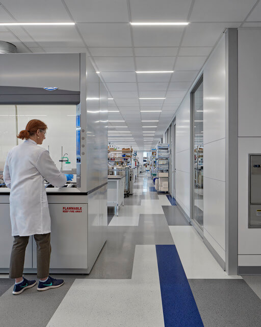
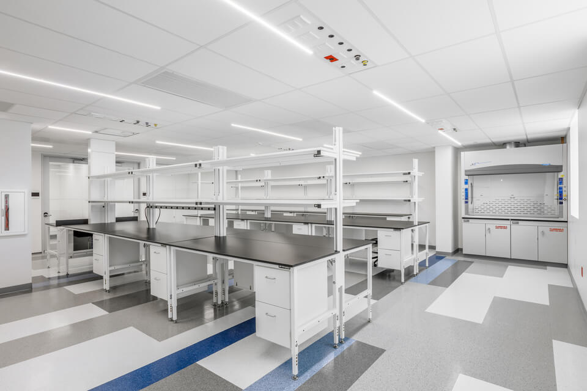
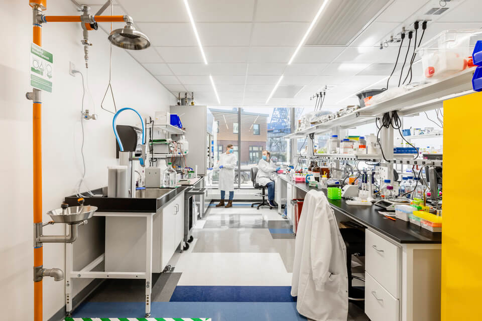
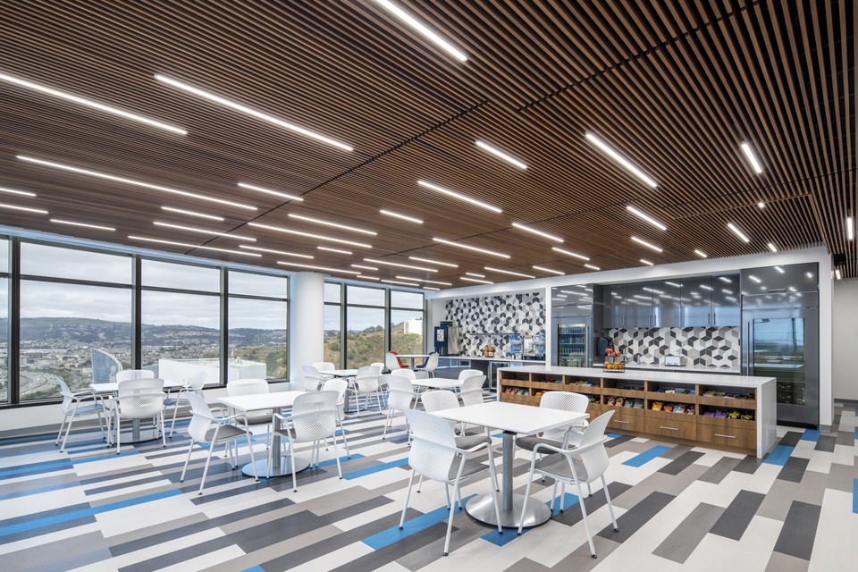
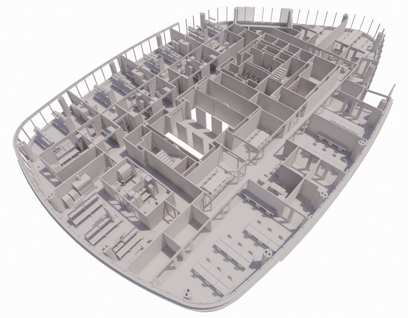
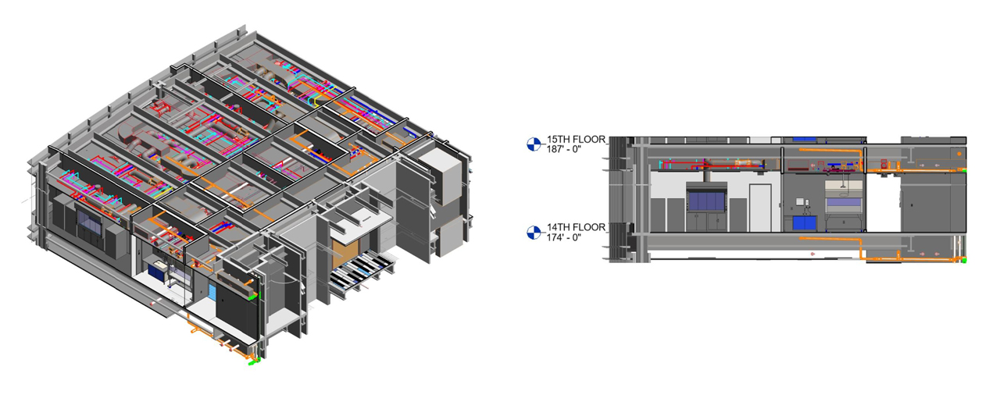
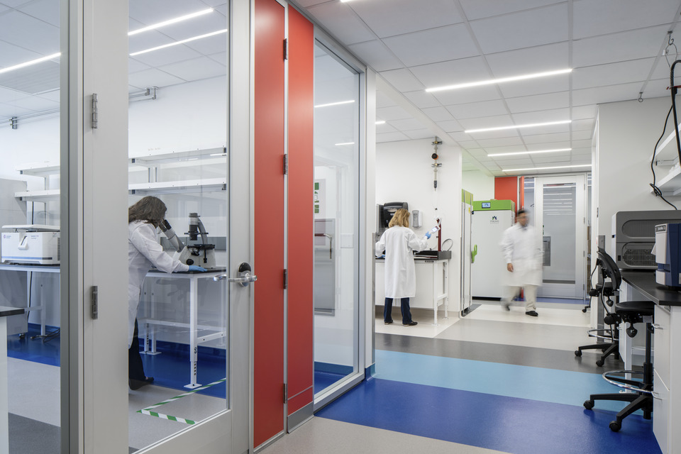

Laboratories & R&D
Flexible, enterprise-grade research environments engineered to accelerate discovery — built to reconfigure, not rebuild.
Mission-Critical Infrastructure
Operator-led infrastructure advisory and execution for the most complex, regulated, and capital-intensive environments — laboratories, bio-manufacturing, clinical, advanced compute, and beyond.
Founded and led by Amrit Chaudhuri — co-founder & former CEO of SmartLabs, where he pioneered the Lab-as-a-Service category.
Figures reflect the verified career track record of Kaliper's founder, Amrit Chaudhuri.
Complex facilities normally force you to assemble a strategy consultant, a broker, an architect, a general contractor, and an operations team — each working in a silo, none of whom has run the kind of environment you're building. Kaliper integrates the whole arc under people who have operated these facilities and built the businesses behind them.
Feasibility, market research, capital-markets strategy, asset repositioning.
Vendor selection, budget, capital deployment, construction oversight.
Specialized, modular, reconfigurable facilities built for change.
Validation, transition, training, and operational handoff.
Run the facility — or stand up an entirely new operating company.
Who we work with
Flexible, enterprise-grade research environments engineered to accelerate discovery — built to reconfigure, not rebuild.
Process, cleanroom, and regulated manufacturing infrastructure designed around real production workflows and compliance.
Clinical, diagnostic, and care-delivery facilities with the accreditation, compliance, and operational rigor they demand.
High-density, resilient compute infrastructure with the redundancy and power strategy modern AI workloads require.
Specialized industrial and technical facilities, including adaptive reuse of legacy assets into high-value space.
Residential, hospitality, and co-working operating models — the fractional-access businesses we've built and run for years.
Market analysis and feasibility, capital-markets strategy, campus and portfolio analysis, entitlements and code, and asset optimization — the unbiased, data-driven thinking that sets a project's direction.
Owner's Project Management from concept to completion — vendor selection, budget and risk management, capital deployment, and construction oversight — plus fee development and co-development partnerships.
Specialized and modular facility design with built-in redundancy and future-proofing, engineered around how the space is actually used — then commissioned, validated, and launched with minimal downtime.
Operational modernization, compliance and EHS programs, managed operations and on-the-ground staffing — and the rarer capability of standing up an entirely new operating company, from financial model to launch to running it long-term.
Most firms see one slice of your project. We've lived the whole thing — designed the room, raised the capital, and run the operation. That changes every recommendation we make.
We've operated these facilities and built the companies behind them — so our design and strategy decisions are grounded in day-2 reality, not theory.
Decisions draw on real operating benchmarks — utilization, staffing ratios, equipment sharing, energy intensity, cost per RSF, launch timelines, and day-two operating cost — not rules of thumb.
One accountable team from the first feasibility model to ongoing operations — no handoffs, no finger-pointing, no lost context.
Our leadership built the SmartLabs platform — roughly a million square feet of enterprise-grade lab and bioproduction space across the country. A selection:




Selected SmartLabs locations. Architecture & photography courtesy of SMMA.
Engineered, not improvised


Design coordination & BIM models — the kind of engineering rigor behind every space we deliver.

The work, in the end, is the room — enterprise-grade space, built to be shared.
Amrit Chaudhuri
Founder & Managing Partner
Amrit is a biotechnology executive, entrepreneur, and infrastructure builder who has spent two decades solving the operational and strategic challenges at the intersection of life sciences, healthcare, real estate, and technology.
He is best known as the co-founder and former CEO of SmartLabs (2014–2024), where he pioneered the Lab-as-a-Service model and built one of the largest integrated laboratory platforms in the industry — raising $400M+, developing roughly one million square feet of lab space, and supporting thousands of scientists. The early work done in SmartLabs space helped enable the infrastructure behind the first FDA-approved CRISPR therapy. Earlier, he founded Advanced Peptides, delivering 3,000+ projects for 120+ organizations.
He was named to Inc.'s 20 Inspiring Entrepreneurs Improving Health for All, holds US Patent 9,505,820B2, serves on New York City's Life Sciences Real Estate Advisory Board, delivered the keynote at Taiwan's national CDMO summit, and gave a statement to the 117th U.S. Congress on biomedical infrastructure. Today he advises institutions, developers, and governments on next-generation life sciences campuses, national CDMO strategy, and academic medical center transformation.
"The hardest part isn't building the science. It's building everything around it."
Read his full story →Let's work together
We work internationally with developers, institutions, governments, and investors. Tell us what you're building and a partner will be in touch.
Prefer email? hello@kaliperco.com